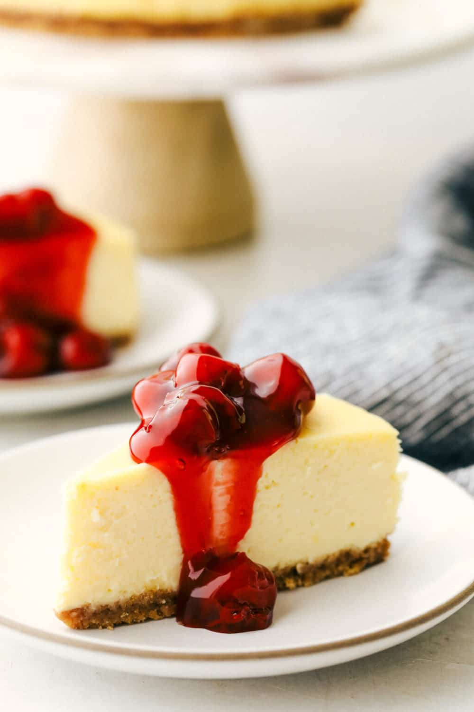

Cheesecake

Description
Cheesecake is a New York staple. It can be difficult to get right, but the results are worth it.
ingredients
Crust
- 1 cup graham cracker crumbs
- 1/2 cup all-purpose flour
- 1/3 cup dark brown sugar
- 1/4 teaspoon salt
- 6 tablespoons unsalted butter
Cheesecake Filling
- 40 ounces cream cheese
- 1 1/2 cups granulated sugar
- 1/8 teaspoon salt
- 1/3 cup sour cream
- 2 teaspoons lemon juice
- 2 teaspoons vanilla extract
- 2 egg yolks
- 6 eggs
Strawberry Topping
- 2 pounds strawberries
- 1/2 cup granulated sugar
- pinch of salt
- 1 cup strawberry jam
- 2 tablespoons lemon juice
Steps
- Preheat oven to 325 degrees F and adjust racks to lower-middle and upper-middle positions. Lightly grease the bottom and sides of a 9-inch springform pan.
- Make the Crust: In a medium bowl, stir together the graham cracker crumbs, flour, brown sugar, and salt. Pour in the melted butter over the mixture and stir with a rubber spatula until the entire mixture is moistened. Press evenly into the bottom of the prepared springform pan and bake until the edges begin to lightly brown, 11 to 13 minutes. Set aside to cool completely.
- Reduce oven temperature to 200 degrees F.
- Make the Cheesecake Filling: Beat the cream cheese, ¾ cup of the sugar, and the salt on medium-low speed until combined, about 1 minute. Beat in the remaining ¾ cup of sugar until combined, about 1 minute. Scrape down the sides of the bowl and the beater. Add the sour cream, lemon juice, and vanilla extract and beat on low speed until combined, 1 minute. Add the egg yolks and beat at medium-low speed until thoroughly combined, 1 minute. Scrape the bowl and beater well. Add the whole eggs two at a time, beating for 30 seconds after each addition.
- Pour the filling over the crust and place the springform pan on the lower-middle rack. Place a rimmed baking sheet on the rack below to catch any drips. Bake until the cheesecake registers 150 degrees F on an instant-read thermometer, 2 hours 15 minutes to 3 hours.
- Remove the cake from the oven and increase the oven temperature to 500 degrees F (leave the rimmed baking sheet on the bottom rack).
- Once the oven reaches 500 degrees, place the cheesecake on the upper-middle rack. Bake until the top is lightly browned, 3 to 8 minutes. Remove from the oven, place on a wire rack and allow to rest for 5 minutes. Run a paring knife between the cheesecake and the side of the springform pan, then allow to cool to room temperature, at least 3 hours. Cover with plastic wrap and refrigerate until completely chilled, at least 6 hours but ideally overnight.
- Remove the sides of the springform pan and allow to sit at room temperature for 30 minutes before serving.
- To Make the Fresh Strawberry Topping: In a large bowl, toss together the sliced strawberries and the sugar. Let sit for 30 minutes, stirring occasionally to combine.
- Process the jam in a food processor until smooth, about 10 seconds (or, whisk vigorously until the jam is completely smooth). Place the jam in a small saucepan and bring to a simmer over medium-high heat. Simmer, stirring frequently, until the jam is dark and no longer frothy, about 3 minutes. Stir in the lemon juice, then pour over the strawberries and stir to combine. Allow to cool to room temperature, then cover with plastic wrap and refrigerate until cold, at least 2 hours or up to 12 hours (the strawberry topping is best served within 1 day of making it).